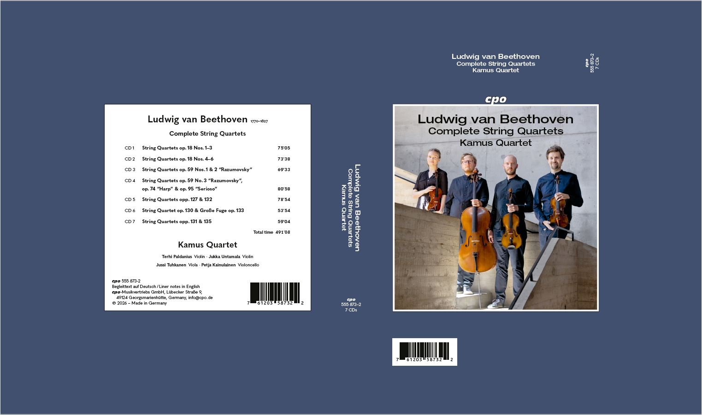

Complete booklet proof
44-page typeset booklet including tracklisting, texts, translations, biographies and credits.
Kamus Quartet · Ludwig van Beethoven
Final seven-disc master delivery for the Kamus Quartet Beethoven cycle. The complete programme is presented below in the intended compositional chronology, with the final movement and disc timings.
Final delivery files
All previous working links have been removed. These are the current final master and documentation files.
Complete final high-resolution master set · 15.1 GB
Proof set received from cpo on 15 September 2026. Quartet comments are requested as soon as possible, and by Monday 21 September at the latest. Publisher correction deadline: 30 September 2026.
44-page typeset booklet including tracklisting, texts, translations, biographies and credits.

Artwork preview for the box containing the seven CDs and booklet.
For quicker auditioning or selective download, the same final high-resolution masters are also available as seven individual disc ZIPs.
Final timing source: Pyramix PQ master TOCs, September 2026. Quartet totals are calculated from the exact source track lengths; disc totals reproduce the final PQ AA timings.
{kind=link}